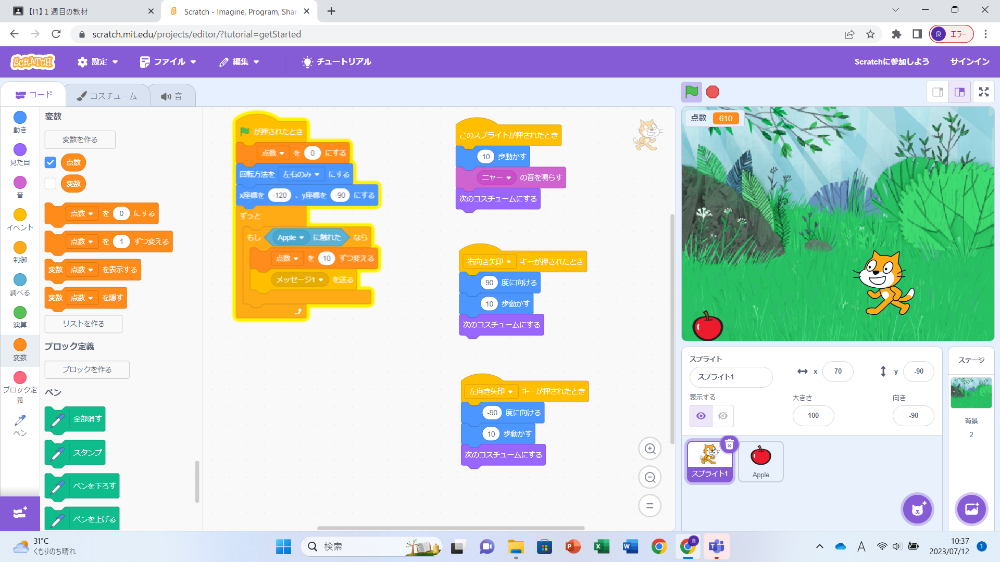

1-2 ゲーム

1.内容
スクラッチを使用して、猫がコンピューターの矢印キーで左右に動くというプログラムを作成し、リンゴが速さ1~4で、ランダムに上から落下してくるというプログラムを
作成した。また、落下してくるリンゴに触れるとポイントが付与されるというプログラムも作成した。
そして、この三つのプログラムを組み合わせて、猫を矢印キーで操作して、ランダムに落下してくるリンゴを取り、ポイントを集めるというゲームを作成した。
2.感想
このプログラムを作成してみて、スクラッチはプログラムの組み合わせ方を変えるだけで、様々なゲームやシステムが作れると思った。
また、スクラッチは、思っていたよりも簡単に扱えたので、まだまだ、自分が考えた新しい機能を付けたし、このゲームを変化させることが出来ると思った。